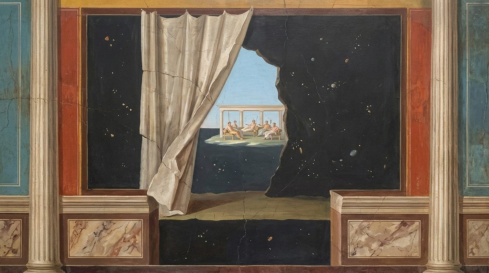
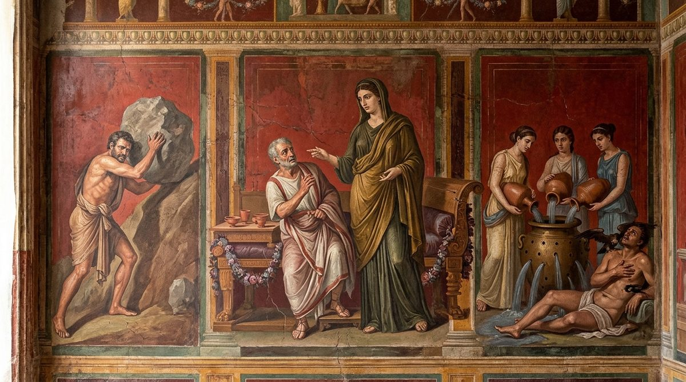

De Rerum Natura · on the nature of things
The praise of Epicurus, and the fear of death as the hidden root of avarice, ambition and crime; mind and spirit are bodily parts of a man, made of the finest seeds, fourfold in nature and bound to the body from birth; a long train of proofs that they are born and die with it, and against the wandering of spirits from body to body; death is therefore nothing to us, nature's own rebuke to those who grieve, the torments of Acheron found in this life, and the kings, poets and sages who have died before us.
The text followed is the printed Perseus text, as in Books 1 and 2. Two gaps are marked and left unfilled, after 97 and after 823. At four places the English follows the correction that almost every editor makes, since the printed word gives no sense: 58 ("what is real remains" for amanare), 433 (geruntur), 476 (cur for cor) and 1069 (ingratis for ingratius). At the rest it renders the printed text, with a note at each: 84, where the construction is strained; 474-475, which editors bracket as an intruder and of which 475 breaks off unfinished; 553 (tali); 763, which repeats 746 and makes no sense where it stands; 955 (baratre); 962, where the sentence ends in a word no one has explained; and 1056 (tam quam). The transcription behind the printed text also doubles a word wherever the original marked a diaeresis, so that aer, "air", appears as aeraaëra, aeraër and the like at some twenty places (233, 236, 248, 269, 282, 287, 292, 302, 443, 456, 508, 571, 573, 591, 752, 980), and the same happened at 396, 433, 691 and 694. These are artifacts of the copy, not variants, and the English reads the single word each time without further notice.
The book is about animus and anima, and the English keeps the two apart as Lucretius does: animus is "mind", the ruling part seated in the breast, and anima is "spirit", the part spread through the whole body. Where mens stands beside animus (94, 139, 142, 398, 402, 615) it is "thought", so that both Latin words show in the line; mens alone is "mind". "Soul" is not used, since it would blur a distinction the argument needs. Lucretius himself is loose with the terms where it suits him and says so (94, 421- 424), and the English follows him in each place rather than correcting him. The three names for the ultimate bodies are kept as in Books 1 and 2: primordia "first-beginnings", principia "beginnings", exordia "origins" (31, 380); elementa is "elements" (244, 374) and corpora prima "first bodies" (438). Particulae (665, 708) are "small pieces" and "tiny parts". Harmonia is "harmony", the Greek word Lucretius mocks the musicians for lending; foedus is "covenant"; templa Acherusia is "the precincts of Acheron", as at 1.120.
The children in the dark and the three lines that follow them (87-93) repeat 2.55-61 verbatim and will recur at 6.35-41; 519-520 repeat 1.670- 671 and 2.753-754; and 806-818, the three ways a thing can be eternal, reappear at 5.351-363, where the English is the same word for word. Within the book, 763 repeats 746 exactly, as the Latin does; "joined and fitted into one" (839, 846), "the pause of life" (860, 930) and "a vessel full of holes" (936, 1009) are rendered identically where Lucretius repeats himself. The Latin has no quotation marks; those at 356, 894-908, 914-915, 933-949, 955-962 and 1025-1052 are the translator's, marking the speeches of an objector, of mourners, of drinkers, of nature herself and of the reader to himself.
In the right margin: what Machiavelli wrote beside these lines in his own copy, Vatican MS Ross. 884, each linked to its folio. About the margin.
1Out of such great darkness you who first were able to raise
so clear a light, shining it on the good things of life,
you I follow, glory of the Greek race1, and now in your
deep-pressed tracks I set down the planted prints of my feet,
5not so much from desire to compete as out of love,
because I long to imitate you; for how should a swallow contend
with swans, or what could kids on trembling legs
achieve in running to match the strong horse's force?
You, father, are the discoverer of things; you supply us
10with a father's precepts, and from your pages, famous one,
as bees in flowering glades sip at everything,
so we likewise feed on all your golden sayings,
golden, and always most worthy of perpetual life.

For as soon as your reasoning, sprung from a divine mind,
15begins to proclaim aloud the nature of things,
the terrors of the mind scatter and flee, the walls of the world
draw apart; I see things carried on through the whole void.
The power of the gods appears, and their quiet seats2,
which neither winds shake nor clouds with rainstorms
20sprinkle, nor does snow, congealed by bitter frost,
falling white, do them violence; an ever-cloudless upper air
covers them and laughs with light poured wide:
nature, moreover, supplies them all things, and nothing
at any time diminishes their peace of mind.
25But on the other hand nowhere do the precincts of Acheron3 appear,
nor does the earth prevent all things from being seen
that are carried on beneath our feet, below, through the void.
At these things a certain divine pleasure
and a shudder seize me there, that by your power nature
30lies so plainly open, laid bare on every side.
And since I have taught what the origins4 of all things
are like, and how, differing in their various shapes,
they fly of their own accord, driven by eternal motion,
and in what way each thing can be created from them,
35next after these things, it seems, the nature of the mind
and of the spirit must now be made clear in my verses,
and that fear of Acheron driven headlong out of doors
which troubles human life from its very depths,
suffusing all things with the blackness of death, and leaves
40no pleasure clear and pure.
For though men often say that diseases are more to be feared,
and a life of disgrace, than the Tartarus of death5,
and that they know the nature of the mind is of blood,
or else of wind6, if so their fancy happens to run,
45and that they have no need whatever of our reasoning,
from this you may observe that all these things are boasted for the sake
of praise rather than because the thing itself is approved.
These same men, exiled from their country and banished far
from the sight of men, befouled with some ugly charge,
50afflicted, in short, with every hardship, still live on,
and yet wherever they come in their misery they make offerings to the dead,
and slaughter black cattle, and to the divine shades7
send down funeral gifts, and in bitter circumstances
turn their minds far more keenly to religion.
55So it is the more fitting to watch a man in doubtful dangers
and to learn in adversity what he is;
for then at last true words are drawn up from the depth
of the heart, and the mask is torn away; what is real remains8.
Again, avarice and the blind craving for honors,
60which force wretched men to overstep the bounds
of right, and sometimes, as partners and agents of crime,
to strive night and day with surpassing labor
to rise up to the height of wealth: these wounds of life
are fed in no small part by the fear of death.
65For foul contempt and bitter want, as a rule,
seem far removed from a sweet and stable life,
and to linger, as it were, already before the gates of death;
and while men, driven by a false terror, wish
to have fled far from these and removed themselves far, far away,
70they amass a fortune from the blood of citizens9, and greedily
double their riches, piling slaughter on slaughter;
cruelly they rejoice at a brother's sad funeral,
and hate and fear the tables of their kin.
On a like principle, and from this same fear, they are often
75wasted by envy: that before their eyes that man is powerful,
that man is gazed at, who walks clothed in bright honor,
while they themselves, they complain, roll in darkness and mire.
Some perish for the sake of statues and a name.
And often, through fear of death, so great a hatred
80of life and of seeing the light seizes human beings
that with grieving hearts they decree their own death,
forgetting that this fear is the fountain of their cares:
that this harasses shame, this bursts the bonds of friendship
and, in sum, urges them to overturn piety10;
85for often before now men have betrayed country and dear parents,
seeking to shun the precincts of Acheron.
For just as children tremble and fear everything11
in blind darkness, so we in the light are afraid
at times of things that are no more to be feared than
90what children in the dark shudder at and imagine will come.
This terror of the mind, then, and this darkness
must be scattered not by the sun's rays or the bright shafts of day
but by the face and reasoning of nature.
First, I say that the mind, which we often call thought12,
95in which the counsel and governance of life are placed,
is a part of a human being no less than hand and foot
and eyes stand forth as parts of the whole living creature.13
[lacuna]
that the sense of the mind is not placed in a fixed part,
but is a certain vital condition of the body,
100which the Greeks call harmony14, because it makes us
live with sense, though the mind is in no part;
as when good health is often said to belong
to the body, and yet it is not any part of the healthy man,
so they do not place the sense of the mind in a fixed part;
105and in this they seem to me to wander far astray.
And so the body, which is seen in plain view, is often sick,
when yet in another, hidden part we are glad;
and in turn the reverse often happens, the other way about,
when one wretched in mind is glad in the whole body;
110in no other way than if, when a sick man's foot is aching,
his head meanwhile should happen to be in no pain.
Further, when the limbs are given up to soft sleep
and the body, a heavy weight, lies sprawled without sense,
there is yet something else in us which at that time
115is stirred in many ways and receives into itself
all the motions of joy and the empty cares of the heart.
Now, so that you may know the spirit too is in the limbs,
and that the body does not feel by any harmony,
first of all it happens that when much of the body is taken away
120life still often lingers in our limbs.
And again this same life, when a few bodies of heat
have scattered abroad and air has been driven out through the mouth,
at once deserts the veins and leaves the bones;
so that you may know from this that not all bodies
125have an equal share, nor equally prop up our safety,
but rather that these, which are seeds of wind and of warm
heat, see to it that life lingers in the limbs.
There is therefore heat and a vital wind in the body
itself, which deserts our limbs as we die.
130Therefore, since the nature of the mind has been found,
and of the spirit, to be a kind of part of man, give back the name–fol. 44r
of harmony, brought down to the musicians from lofty Helicon,
or else they themselves drew it from elsewhere and carried it
over to that thing which then had need of a name of its own.
135Whatever it is, let them keep it; you, take in the rest of my words.
Now I say that mind and spirit are held joined together
with one another and make up from themselves a single nature,
but that the head, so to speak, the lord over the whole body,
is the counsel which we call the mind and thought.
140And this is set and fixed in the middle region of the breast.
For here dread and fear leap up, around these places
joys caress us: here, therefore, are thought and mind.
The rest of the spirit, scattered through the whole body,
obeys, and moves at the nod15 and impulse of the mind.
145This alone, of itself, knows for itself and is glad for itself,
when nothing moves either the spirit or the body along with it.
And just as, when the head or the eye is hurt in us
by an attack of pain, we are not tormented in our whole
body, so the mind is sometimes hurt itself
150or thrives with joy, when the rest of the spirit
through the limbs and frame is stirred by nothing new;
but when the mind is moved by a more violent fear,
we see the whole spirit through the limbs feel with it,
and so sweat and pallor break out over the whole
155body, and the tongue falters and the voice dies away,
the eyes grow dark, the ears ring, the limbs give way,
and finally, from the mind's terror, we see
men often collapse; so that anyone may easily learn from this
that the spirit is joined with the mind, and that, struck by the mind's
160force, it at once drives the body forward and strikes it.
This same reasoning teaches that the nature of mind and spirit
is bodily16; for when it is seen to drive the limbs forward,
to snatch the body from sleep and change the face,
and to steer and turn the whole man,
165none of which we see can happen without touch,
nor touch, in turn, without body, must we not admit
that mind and spirit consist of a bodily nature?
Further, you see the mind is acted on together with the body
and feels along with it, in our body.–fol. 44v
170If the grim force of a weapon, though it does not strike out life,
is driven in, laying open bones and sinews within,
yet there follows a faintness, and a pleasant sinking
to the earth, and, on the earth, the turmoil born in the mind,
and now and then a wavering will, as it were, to rise.
175Therefore the nature of the mind must be bodily,
since it suffers from bodily weapons and their blow.
Now of what sort of body this mind of yours is, and from what
it is composed, I shall go on to give an account in words.
To begin with, I say that it is exceedingly fine, and is made
180of exceedingly tiny bodies. That this is so
you may turn your mind to here, so as to know it thoroughly.
Nothing is seen to come about in so swift a way
as what the mind proposes to happen and itself begins;
therefore the mind stirs itself more quickly than any of the things
185whose nature is seen plain before our eyes.
But what is so very mobile must consist of exceedingly round
and exceedingly tiny seeds,
so that, struck by a small impulse, they can be moved.
For water moves and flows at the slightest impulse,
190being made, of course, of small shapes that roll.
But the nature of honey, by contrast, is more steady,
its liquid more sluggish and its motion more delayed;
for the whole store of its matter clings more together,
surely because it is not made of bodies so smooth
195nor so fine and round.
For a hovering, light breath of air can make
a high heap of poppy seed flow away for you from the top,
but against a pile of stones or of ears of grain
it has no power. Therefore, as bodies are the smallest
200and smoothest, so they enjoy mobility;
but whatever are found to be of greater weight
and rougher, the more firmly they are fixed.
Now therefore, since the nature of the mind has been found
exceptionally mobile, it must consist of exceedingly
205small and smooth and round bodies.
This fact, once known to you, my good friend, will be found useful
in many matters and will be called timely.
This too reveals its nature,
how thin the texture it is made of, and in how small
210a place it would be held, if it could be gathered into a ball:
that as soon as the untroubled quiet of death has taken hold
of a man, and the nature of mind and spirit has withdrawn,
you could see nothing taken away there from the whole body
in appearance, nothing in weight: death leaves all intact
215except the vital sense and the warm heat.
Therefore the whole spirit must be of exceedingly small
seeds, linked through veins, flesh, sinews,
inasmuch as, when all of it has gone from the whole body,
the outer contour of the limbs still keeps itself
220unharmed, and not one jot of weight is lacking.
It is just as when the flower of Bacchus17 has died away, or when
the sweet breath of a perfume has scattered into the air,
or when savor has departed from some body;
still the thing itself seems to the eyes no smaller
225for that, nor is anything taken from its weight,
surely because many tiny seeds make up
the savors and the scent in the whole body of these things.
Therefore, again and again, the nature of mind and spirit
you may know is made of exceedingly minute
230seeds, since when it flees it takes away no weight.
Yet we must not think this nature simple18.
For a certain thin breath leaves the dying,
mixed with heat, and heat, in turn, draws air with it;
nor is there any heat that has no air mixed in it;
235for since its nature is of loose texture, it must be
that many first-beginnings of air move within it.
So now the nature of the mind is found to be threefold;
and yet these are not enough, all together, to create sensation,
since the mind does not accept that any of these can create
240the sense-bearing motions, or what it then turns over in the mind.
Therefore a certain fourth nature must also be
added to these; it is altogether without a name19;
than which nothing exists more mobile or more thin,
nor made of smaller and smoother elements;
245it is first to distribute the sense-bearing motions through the limbs.
For it is first stirred, made as it is of small shapes;
then heat takes up the motions, and the unseen power of wind,
then air; then all things are set in motion:
the blood is shaken, then the flesh is thrilled through,
250all of it; last it is passed to the bones and the marrow,
whether it is pleasure or the opposite burning.
Nor can pain lightly penetrate this far, nor sharp
harm seep through, without all things being thrown into confusion
so far that life lacks room and the spirit's
255parts scatter through all the passages of the body.
But mostly an end is made, as it were, at the surface of the body
to these motions: and for this reason we are able to hold on to life.
Now in what way these are mingled with one another, and in what
modes arranged they thrive, though I am eager to give an account,
260the poverty of our native speech20 drags me back against my will;
but still, as far as I can touch on it in sum, I shall touch it.
For the first-beginnings of the beginnings21 run among one another
in their motions, so that no single one can be set apart
nor its power be made separate by space,
265but they stand out, as it were, the many forces of one body.
Just as in the flesh of any living thing, commonly,
there is smell and a certain color and savor, yet from all these
there is made up one complete growth of body,
so heat and air and the unseen power of wind,
270mingled, create one nature, together with that mobile
force which hands out from itself to them the beginning of motion,
from which the sense-bearing motion first arises through the flesh.
For this nature lies hidden deep down and underneath,
and there is nothing further below it in our body,
275and it is in its turn the very spirit of the whole spirit.
Just as in our limbs and through the whole body
the force of mind and the power of spirit lie mingled and hidden,
because it is created of bodies small and few,
so, you see, this force that has no name, made of minute
280bodies, lies hidden, and is, as it were, the very spirit
in its turn of the whole spirit, and rules through the whole body.
On a like principle, wind and air and heat
must be active, mingled with one another through the limbs,
and one lie more beneath or stand out more than another,
285so that one thing may be seen to be made from them all,
lest heat and wind apart, and apart the power
of air, should destroy sense and, drawn asunder, dissolve it.
The mind has also that heat which it takes on in anger22,
when it boils up and fire flashes more fiercely from the eyes;
290there is also much cold breath, the companion of fear,
which stirs shuddering in the limbs and rouses the frame;
there is also that state of air made calm,
which comes about in a tranquil breast and a serene face.
But there is more of the hot in those whose hearts are fierce
295and whose angry mind easily boils over into anger,
of which kind above all is the violent force of lions,
who often, groaning, burst their breasts with roaring
and cannot contain the billows of their anger in their breast.
But the cold mind of deer has more of wind
300and more quickly rouses icy breaths through the flesh,
which make a trembling motion rise up in the limbs.
But the nature of oxen lives more by calm air,
nor ever does anger's smoky torch, set beneath, rouse it too far,
spreading over it the shadow of blind darkness,
305nor is it numbed, pierced through by the icy shafts of fear;
it is set between the two, the deer and the savage lions.
So it is with the race of men: although training may make
some equally polished, still it leaves behind
those first traces of the nature of each one's mind.
310Nor must we think that faults can be torn out by the roots,
so that one man does not run more readily to fierce anger,
another not be assailed a little sooner by fear, a third
not take certain things more mildly than is right.
And in many other things the varied natures of men
315must differ, and the characters that follow on them;
whose hidden causes I cannot now set out,
nor find as many names as there are shapes
of the beginnings, from which this variety of things arises.
This I see that I can affirm in these matters:
320that so slight are the traces of our natures left behind,
which reasoning cannot drive away from us,
that nothing hinders us from living a life worthy of gods.
This nature, then, is held in by the whole body
and is itself the body's guardian and the cause of its safety;
325for they cling to one another by common roots
and it seems they cannot be torn apart without destruction.
Just as to tear the smell from lumps of frankincense
is not easy, without its nature too perishing,
so to draw out the nature of mind and spirit
330from the whole body is not easy, without all being dissolved.
So, with their beginnings interwoven from their first origin,
they come to be endowed with a life held in partnership,
nor, it seems, can either, without the force of the other,
the power of body or of mind, feel apart, by itself,
335but by common motions between them on both sides
sense is fanned and kindled for us through the flesh.
Further, the body by itself is never born,
nor grows, nor is seen to last after death.
For not as the liquid of water often gives off the heat
340that was given it, and is not for that reason torn apart itself,
but stays unharmed, not so, I say, can the limbs, left behind,
endure the separation of the spirit,
but they perish utterly, torn apart, and rot away.
So from the beginning of life the mutual contacts
345of body and spirit learn the motions of life,
even while laid away in the mother's limbs and womb,
so that separation cannot happen without ruin and harm;
so that you may see, since the cause of their safety is joined,
that their nature too must stand joined together.
350For the rest, if anyone denies that the body feels
and believes that the spirit, mingled through the whole body,
takes on this motion which we name sense,
he fights against even plain and true facts.
For who will ever tell us what it is for the body to feel,
355if not what the thing itself has openly shown and taught us?
"But when the spirit is let go, the body lacks sense in every part."23
Yes, for it loses what was not its own in life,
and loses much besides when it is driven out of life.
Further, to say that the eyes can see nothing,
360but that the mind looks out through them as through open doors24,
is hard, since the sense of the eyes leads us the other way;
for sense drags us and thrusts us to the pupils themselves,
especially since often we cannot see bright things,
because the light of our eyes is hampered by light.
365This does not happen with doors; for the doorways through which
we ourselves look, when thrown open, take on no labor.
Further, if our eyes serve in place of doors,
then, it seems, the mind ought to see things better
with the eyes taken out, the very doorposts removed.
370In these matters you could by no means accept
what the holy judgment of the man Democritus25 lays down,
that the first-beginnings of body and of mind, one by one,
set side by side alternately, diversify and knit the limbs.
For not only are the elements of the spirit much smaller
375than those of which our body and flesh are made,
but also yield to them in number, and are sparsely scattered
through the limbs, so that you may promise this much at least:
as small as are the first bodies which, falling on us,
can stir sense-bearing motions in the body, so wide
380are the intervals the first origins of the spirit keep.
For we do not feel at times the clinging of dust
upon the body, nor chalk dashed on our limbs and settling there,
nor do we feel mist at night, nor the spider's slender threads
meeting us, when we are netted in them as we go,
385nor the same spider's shriveled garment fallen on our head,
nor the feathers of birds, nor the flying down of plants,
which, from their great lightness, mostly fall only reluctantly,
nor do we feel the passage of every creeping creature,
nor each single footprint, one by one,
390that gnats and the rest set down upon our body.
So far must many things be stirred in us first
before the first-beginnings of the spirit, shaken, can feel,
the seeds mixed with our bodies through the limbs,
and before, beating across these gaps, they can
395run together, unite, and leap apart in turn.
And the mind holds the barriers of life more firmly
and is more master over life than the force of spirit.
For without thought and mind no part of the spirit
can remain in the limbs for the smallest part of time,
400but follows readily as companion and departs into the air
and leaves the limbs gone cold in the chill of death.
But he stays in life in whom thought and mind remain,
however torn his trunk, with the limbs all round cut off;
the trunk, with spirit taken from around it and limbs removed,
405lives and draws in the life-giving airs of heaven;
deprived, if not entirely, yet of a great part of its spirit,
it still lingers and holds fast in life;
as, when the eye is torn all round, if the pupil remains
unharmed, the living power of seeing stands,
410provided only you do not ruin the whole orb of the eye
and cut around the pupil and leave it all alone;
for that too will not happen without the destruction of both.
But if that tiny part in the middle of the eye is eaten away,
at once the light sets and darkness follows,
415though the bright orb be otherwise unharmed.
By this covenant26 spirit and mind are always bound.
Come now, so you may know that in living creatures the minds
and the light spirits are things born and mortal,
verses long sought out and found with sweet labor
420I shall go on to set out, worthy of your life.
You, see that you yoke both of them under one name27,
and when, for example, I go on to speak of spirit,
teaching that it is mortal, believe that I speak of mind as well,
inasmuch as it is one thing, and a thing joined together.
425To begin with, since I have shown that it is fine, and made
of minute bodies, and formed of beginnings much smaller
than the flowing moisture of water
or mist or smoke; for in mobility it far28
excels, and moves when struck by a slighter cause;
430indeed it is moved even by images of smoke and mist,
as when, lulled in sleep, we see altars
breathe their steam on high and send up smoke;
for beyond doubt it is images that are borne to us here.
Now therefore, since, when vessels are shattered on every side,
435you see the moisture flow out and the liquid run away,
and since mist and smoke depart into the air,[sign]fol. 49v
believe that the spirit too is scattered, and perishes far
more swiftly, and is sooner dissolved into its first bodies,
once it has been taken from a man's limbs and has withdrawn;
440for indeed, since the body, which is as it were its vessel29,
cannot contain it when shaken apart by some cause
and made rare by the drawing of blood from the veins,
how could you believe it could be contained by any air,
which is rarer than our body and less able to contain?
445Further, we feel that the mind is born together with the body,
and grows along with it, and along with it grows old.
For just as children totter with a body weak
and tender, so a slender judgment of the mind goes with it.
Then when their age has grown up into sturdy strength,
450their counsel too is greater and the mind's force more increased.
Later, when the body is shaken by the strong forces
of age, and the limbs have sunk with their strength blunted,
the wit limps, the tongue raves, the mind totters,
all things fail and are lacking at one time.
455It follows, therefore, that the whole nature of the spirit
is dissolved as well, like smoke, into the high breezes of the air;
since we see it born alongside, and alongside
grow, and, as I have shown, worn out by age, give way together.
Add to this that we see, just as the body itself
460takes on monstrous diseases and hard pain,
so the mind takes on sharp cares and grief and fear;
therefore it follows that it shares in death as well.
What is more, in diseases of the body there often strays
the mind; for it loses its wits and speaks crazed words,
465and at times by a heavy lethargy is carried down into deep
and endless sleep, the eyes and the nodding head drooping,
so that it neither hears voices nor has the power to know
the faces of those who, calling it back to life,
stand around, wet with tears on face and cheek.
470Therefore you must admit the mind too is dissolved,
since the contagions of disease make their way into it;
for pain and disease are each of them craftsmen of death30,
as we have been thoroughly taught before by the deaths of many.
And since the mind, like a sick body, is healed31
475and equally the mind is healed, the body with an empty ...
Finally, why32, when the force of wine has pierced a man,
fierce, and its heat has withdrawn, spread out, into the veins,
a heaviness of the limbs follows, his legs are hobbled
as he staggers, his tongue grows slow, his mind is sodden,
480his eyes swim, shouting, sobbing, quarrels swell,
and then whatever else of this kind follows:
why are these, unless because the vehement violence of wine
is wont to confound the spirit within the body itself?
But whatever things can be confused and hindered
485show that, if a somewhat harsher cause worked its way in,
they would perish, deprived of future life.
What is more, often, suddenly compelled by the force of disease,
someone before our eyes, as if by a stroke of lightning33,
falls down and foams at the mouth, groans and trembles in his limbs,
490loses his wits, stiffens his sinews, writhes, pants
irregularly, and wears out his limbs with tossing,
no doubt because the force of the disease, dispersed through the limbs,
foaming, drives and troubles the spirit, as on the salt sea
the waves seethe under the strong force of the winds.
495Next, a groan is forced out, since the limbs are afflicted
with pain, and in general because the seeds of voice
are driven out and carried in a mass outside through the mouth
where they are used, so to speak, to go, and where a road is built.
Loss of wits comes about because the force of mind and spirit
500is thrown into confusion and, as I have shown, split apart,
is scattered, torn asunder by that same poison.
Then when the cause of the disease has turned back, and the sharp
humor of the corrupted body has gone back into its hiding-places,
then first, as if tottering, he gets up, and to all
505his senses gradually returns, and takes back his spirit.
Since these, then, even within the body itself, are tossed
by such great diseases, and suffer, torn apart in wretched ways,
why do you believe that the same, without a body, in the open air,
can pass their lifetime among the strong winds?
510And since the mind, like a sick body, is healed,
as we discern, and we see that it can be turned by medicine,
this too foretells that the mind lives a mortal life.
For he must add parts, or shift them from their order,
or at any rate take away some jot from the sum,
515for whoever sets about and begins to change the mind
or seeks to bend any other nature whatever.
But neither will it let parts be shifted in it, nor added,
that which is immortal, nor will it let one jot flow away;- -fol. 51r
for whatever is changed and passes out of its own bounds,
520this at once is the death of what it was before.34
Therefore the mind, whether it sickens, gives out
mortal signs, as I have shown, or whether medicine turns it.
So surely does the true thing seem to meet false reasoning
and bar its escape as it goes
525and convict the false with a two-edged refutation.
Finally, we often see a man go little by little
and lose the vital sense limb by limb:
first the toes on the feet and the nails turn livid,
then the feet and legs die, then after that through the other
530limbs the tracks of chill death go creeping.
Since this nature of the spirit is split and does not
come forth whole at one time, it must be held mortal.
But if perhaps you think it can draw itself inward
through the limbs and gather its parts into one,
535and so withdraw sense from all the limbs,
yet that place where so great a store of spirit
is gathered ought to be seen to have greater sense;
and since it is nowhere, no doubt, as we said before,
the spirit, torn apart, is scattered abroad and so perishes.
540What is more, even if we chose to grant what is false
and allow that the spirit can be massed in the body of those
who leave the light, dying bit by bit,
still you must admit the spirit is mortal,
nor does it matter whether it perishes scattered through the air
545or, drawn in out of its parts, grows dull and brutish,
since more and more, on every side, sense fails
the whole man, and less and less of life remains on every side.
And since the mind is a single part of a man and stays
fixed in a certain place, just as the ears and eyes are,
550and the other senses that steer our life,
and since, just as hand or eye or nostrils, set apart
and severed from us, cannot feel or even be,
but yet, in such a state, are abandoned35 in a short time,
so the mind cannot by itself be without the body and the man
555himself, which seems to be a kind of vessel for it,
or whatever else you would rather picture as more closely
joined to it, since the body clings to it with a bond.
Again, the living powers of body and mind
have strength and enjoy life only joined to each other;
560for neither without the body can it put forth the motions of life,
the nature of the mind, alone by itself, nor again
can a body deprived of spirit endure and use its senses.
Clearly, just as the eye itself, torn out by the roots,
cannot make out any thing apart from the whole body,
565so the spirit and the mind by themselves seem to have no power.
No wonder, since, mingled through veins and flesh,–fol. 52r
through sinews and bones, they are held in by the whole body,
and their first-beginnings cannot leap apart freely
across great intervals; therefore, shut in, they move
570with the sense-bearing motions which, outside the body,
cast out into the breezes of air after death, they cannot move,
because they are not held in by a like principle;
for air would be a body, a living thing, if the spirit
could hold itself together and shut itself within those motions
575which before it carried on in the sinews and in the body itself.
Therefore again and again, when the whole covering of the body
is undone and the breaths of life are cast out,
you must admit that the senses of the mind are dissolved,
and the spirit too, since the cause of the two is joined.
580Again, since the body cannot endure the parting
from the spirit without rotting away in a foul stench,
why do you doubt that, risen from deep within, from the depths,
the force of the spirit has flowed out, diffused like smoke,–fol. 52r
and that therefore the body, changed and rotten, has collapsed
585in such great ruin, because the spirit's foundations have been moved
deep from their place, and flow outward through the limbs
and through all the windings of the passages there are in the body
and its openings? So in many ways you can learn
that the nature of the spirit went out through the limbs, divided,
590and was torn apart in itself within the body itself
before it slipped out and swam forth into the breezes of air.–fol. 52r
What is more, while it still turns within the bounds of life,
often, from some cause, the spirit seems nonetheless shaken
and about to go, and to be loosed whole from the whole body,
595and the face seems to grow faint as at the final hour
and all the limbs to drop, slack, from the bloodless body.
Such is the case when it is said that it has gone ill with the mind36,
or that the spirit has failed; when now there is alarm and all
long to catch hold again of the last bond of life;
600for then the mind and all the power of the spirit
are shaken. And these totter together with the body itself,
so that a cause a little heavier could dissolve them.
Why do you doubt, then, that once driven out of the body,
feeble, outside, in the open, its covering removed,
605not only could it not endure through all time
but could not hold together for the least space of time?
For no one dying seems to feel
the spirit going out unharmed from the whole body,
nor rising first to the throat and the gullet above,
610but failing, placed as it is in a fixed region,
just as he knows the other senses dissolve, each in its own
part. But if our mind were immortal,
it would not, dying, so lament that it was being dissolved,
but rather that it went out and left its garment, like a snake.–fol. 52v
615Again, why is the thought and judgment of the mind never
born in the head or the feet or hands, but in all men clings
to one seat and to fixed regions,
if fixed places are not assigned to each thing for its birth,
and where each thing, once created, can endure,
620and so exist with its many-fashioned members so divided
that the order of the limbs never appears reversed?
So strictly does thing follow thing, and flame is not wont
to be created in rivers, nor cold to be begotten in fire.
Further, if the nature of the spirit is immortal
625and can feel when separated from our body,
we must, I think, suppose it furnished with five senses.
Nor by any other principle can we picture to ourselves
the spirits below wandering in Acheron.
And so the painters and the earlier generations of writers
630have brought spirits on the scene furnished thus with senses.
But neither eyes nor nostrils nor the hand itself can exist
apart for the spirit, nor apart the tongue, nor ears;
therefore they cannot by themselves feel, or even be.
And since we feel that vital sense is present in the whole
635body, and see that the whole is a living thing,
if suddenly, with a swift blow, it is cut through the middle
by some force, so as to sever the two halves apart,
no doubt the force of the spirit too, divided
and cleft, will be torn asunder together with the body.
640But what is cut and parts into any pieces at all
plainly denies that its own nature is eternal.
They tell how scythe-bearing chariots37 lop off limbs,
often so suddenly, hot with the mingled slaughter,
that there seems to quiver on the ground the part which from the limbs
645has fallen, cut away, while yet the mind and the man's force,
through the mobility of the harm, cannot feel the pain;
and at once, since the mind is given over to the zeal of battle,
with what is left of the body it makes for battle and slaughter,
and often does not grasp that its left arm is lost, shield and all,
650that wheels and ravening scythes have dragged off among the horses;
another, that his right has fallen, as he climbs and presses on.
Then another tries to rise when his leg is taken away,
while nearby on the ground the dying foot works its toes.
And the head cut off from the warm and living trunk
655keeps on the ground a living look and open eyes
until it has given up all the remnants of the spirit.
What is more, if, its tongue flickering, its tail threatening,
a serpent's, with its long body, both of them
it pleased you to cut into many pieces with the steel,
660you will see all the pieces, severed, each apart, with the wound
still fresh, writhe and sprinkle the earth with gore,torrariThe copy's reading picked out in the margin; a query or a collation note (modern texts: tortari).fol. 53v
and the fore part turn back to seek itself with its mouth,
to grip with its bite, struck by the burning pain of the wound.
Shall we say, then, that there are whole spirits in all those
665small pieces? But on that principle it will follow
that one living creature had many spirits in its body.
Therefore that which was one has been divided along with
the body; and so both must be thought mortal,
since alike they are cut apart into many pieces.
670Further, if the nature of the spirit is immortal38
and works its way into the body at our birth,
why can we not remember, besides, the age lived before,
nor keep any traces of the things we have done?
For if the power of the mind is changed so greatly
675that all holding of past things has fallen away from it,
that, I think, wanders now not far from death;
and so you must confess that what was before
has perished, and that what is now has now been created.
Further, if, when our body is already complete,
680the living power of the mind is wont to be brought in
at the moment we are born and cross the threshold of life,
it would not then be fitting that, with the body and together
with the limbs, it should be seen to grow within the very blood,
but fitting rather that it live alone, for itself, as in a cage,
685and yet in such a way that the whole body flows with sense.
Therefore, again and again, we must not think that spirits
are without a beginning, nor released from the law of death;
for we must not think they could have been bound so closely
to our bodies, having worked their way in from outside,
690a thing the plain fact shows to be wholly the reverse;
for the spirit is so knit through veins, flesh, sinews,
and bones, that even the teeth are given a share in sense,participor (?)A marginal word with the same bracket prefix as '(vesti' (2.10) and '(at cibetur' (1.1093); the reading and purpose are uncertain.fol. 54r
as toothache shows, and the twinge of icy water,
and a rough stone bitten on, met suddenly in the bread;
695nor, since they are so closely woven in, do they seem able
to go out unharmed and unloose themselves safe
from all the sinews and the bones and joints.
But if perhaps you think the spirit, working in from outside,
is wont to make its way, seeping, through our limbs,
700so much the more surely will it perish, being fused with the body;
for what seeps through is dissolved, and therefore perishes;
for it is parted out through all the passages of the body.
As food, when it is dispersed into all the limbs and frame,
perishes and supplies another nature out of itself,
705so spirit and mind, however whole they go fresh
into the body, are yet dissolved in seeping through,
while, as through passages, there are dispersed into all the frame
the tiny parts of which this nature of the mind is created,
the nature which now has mastery in our body, born
710from that which perished then, parted through the frame.
Therefore it seems the nature of the spirit is neither
deprived of a birthday nor exempt from a funeral.
Again, are seeds of the spirit left behind, or not,
in the lifeless body? If they are left and are in it,
715there will be no way it can rightly be held immortal,
since it has gone off diminished, with parts lost.
But if it has fled away, taken off with its parts so intact
that it has left no parts of itself in the body,
from where do corpses, their flesh now going rancid,
720breathe out worms39, and from where so great a host of living things,
boneless and bloodless, surge through the swollen frame?
But if perhaps you believe that spirits work their way in from outside
into worms, and can come one by one into bodies,
and do not reckon why many thousands of spirits
725should gather where one has withdrawn, still there is this
that it seems must be asked and brought to decision:
whether, in the end, the spirits hunt down each of the seeds
of little worms and build themselves a place to be,
or work their way, as it were, into bodies already complete.
730But why they should do it themselves, or why they should labor,
there is no saying. For indeed, when they are without a body,
they do not flit about troubled by diseases and cold and hunger;
for it is the body, more akin to these ills, that suffers them,
and the mind endures many evils by contact with it.
735But grant it as useful as you like for them to make a body
when they come in under; yet there seems no way they could.
Therefore spirits do not make bodies and frames for themselves.
Nor yet is there a way they could work their way into bodies
already complete; for neither could they be finely
740knit in, nor will contact be made through shared feeling.
Again, why does fierce violence go with the grim breed
of lions, cunning with foxes, and flight with deer,
handed down from their sires, their sires' fear spurring their frame,
and why indeed do all other things of this kind
745come to be in limbs and temper from the beginning of life,
if not because, fixed by its own seed and breed,
the force of the mind grows equally with every body?[tick]fol. 55r
But if it were immortal and used to change
bodies, living things would have mixed characters:
750the dog of Hyrcanian40 seed would often flee
the charge of the horned stag, and the hawk would tremble
through the breezes of the air, fleeing at the coming of the dove,
men would lack sense, and the wild generations of wild beasts be wise.
For that rests on false reasoning, when they say
755an immortal spirit is altered when its body is changed;
for what is changed is dissolved, and therefore perishes;
for its parts are transposed and shift from their order;
therefore they must be able to be dissolved through the frame too,
so that in the end they all perish together with the body.
760But if they say that the spirits of men always pass
into human bodies, still I shall ask why from wise
a spirit could turn foolish, and why no boy is prudent,
if not because, fixed by its own seed and breed,41
nor the mare's foal as well trained as the strong horse's force.
765No doubt they will take refuge in this: that in a tender body
the mind grows tender. But if this happens, you must confess
that the spirit is mortal, since, changed throughout the frame,
it loses so greatly its former life and sense.
Or how will it be able, in step with every body,
770to grow strong and touch the longed-for flower of age,
this force of the mind, unless it is a partner at the first origin?
Or why does it wish to go out of limbs grown old?
Does it fear to stay shut up in a rotting body,
fear that its house, worn out by the long length of years,
775may fall in on it? But there are no dangers for the immortal.
Again, that spirits stand ready at the couplings of Venus
and the births of beasts seems a thing to laugh at,
immortals waiting for mortal limbs
in number beyond number, and contending headlong
780among themselves which first and before all shall work its way in;
unless perhaps the covenants of spirits are so agreed
that whichever comes flying first works its way in
first, and they do not strive with their strength one whit.
Again, there can be no tree in the upper air, no clouds
785in the deep sea, nor can fish live in the fields,
nor blood be in wood, nor sap in stones.
It is fixed and ordered where each thing grows and is.
So the nature of the mind cannot arise without the body,
alone, nor exist far off from sinews and blood.
790For if it could, the force of the mind itself, much sooner,
could be in the head or shoulders or the lowest heels,
and would be wont to be born in any part you please,
and still remain in the same man and the same vessel.
And since even in our body it is evidently fixed
795and ordered, it seems, where each can be and grow,
spirit and mind, each apart, all the more must we deny
that it can, entire, endure outside the body, or be born.
Therefore, when the body has perished, you must confess
that the spirit has perished, torn apart through the whole body.
800For indeed, to join the mortal to the eternal, and to think
that they can feel together and act each upon each,
is folly; for what must be thought more at odds
or more disjoined from each other and more discordant
than that what is mortal, joined to the immortal
805and everlasting in union, should bear savage storms?
Further, whatever things endure eternal42 must, of necessity,
either, because they are of solid body, repel blows
and suffer nothing to enter them that could tear apart
their close-knit parts within, as the bodies of matter
810are, whose nature we have shown before;
or be able to last through all time for this reason,
that they are exempt from blows, as the void is,
which stays untouched and is not affected one whit by a stroke;
or else because there is no supply of place around them
815into which things could, as it were, part and be dissolved,
as the sum of sums is eternal, nor is there outside it
any place into which they might scatter, nor are there bodies that
could fall upon them and dissolve them with a strong blow.
But if perhaps it should rather be held immortal43 for this reason,
820that it is kept fortified by the things that give it life,
either because things foreign to its safety do not come at all,
or because those that do come are by some means driven back
and retreat before we can feel what harm they do,
[lacuna]
for besides that it sickens along with the body's diseases,
825there comes that which often torments it about things to come,
keeps it wretched in fear, and wears it out with cares,
and for misdeeds in the past its sins gnaw it with remorse.
Add the madness proper to the mind, and its forgetfulness of things;
add that it is plunged into the black waves of lethargy.
830Death, therefore, is nothing to us44, and concerns us not a whit,
since the nature of the mind is held to be mortal.
And just as in time gone by we felt no distress
when the Carthaginians45 were coming from every side to the clash,
when all things, shaken by the trembling tumult of war,
835shuddered and quaked beneath the high breezes of the upper air,
and it stood in doubt under which side's rule all men
must fall, all that is human, by land and by sea,
so, when we shall not be, when the parting of body and spirit
has come about, from which we are joined and fitted into one46,
840surely nothing at all, to us who then shall not be,
will be able to happen or to move our sense,
not if earth should be mingled with sea, and sea with sky.
And even if it does feel, after it is torn from our body,
the nature of the mind along with the power of the spirit,
845still it is nothing to us, who by the joining and wedlock
of body and spirit exist, joined and fitted into one.
Nor, if time should gather up our matter
after death and bring it back again as it is now placed,
and the lights of life should once more be given us,
850would even that event concern us in any way at all,
once the recollection of ourselves47 has been broken off.
And as it is, nothing touches us of ourselves, we who before
existed, nor does anguish over those selves affect us now.
For when you look back over the whole of measureless time,
855its past expanse, and then how manifold
the motions of matter are, you could easily believe this,
that seeds have often been set in the same order48 as now,
these very seeds of which we now consist, in times before.
And yet we cannot recapture this with remembering mind;
860for a pause of life has been thrown between, and all the motions
have wandered off at random, astray, far from the senses.
For if there is to be misery and distress, perhaps,
he too must himself exist at that time, to whom ill can
befall. Since death takes this away, and prevents the existence
865of him to whom these troubles could be brought together,
we may know that there is nothing to be feared in death,–fol. 57r
that he who is not cannot be wretched, and that not a whit
it differs whether he had never been born at any time,
when immortal death has taken away his mortal life.
870Therefore, when you see a man indignant on his own behalf
that after death he will either rot, his body laid away,
or perish in flames or in the jaws of wild beasts,
you may know that he does not ring true, and that there lurks
some blind goad in his heart, however much he himself denies
875that he believes any sense will remain to him in death.
For he does not, I think, grant what he professes, nor its ground,–fol. 57v
nor tear himself up by the roots from life and cast himself out,
but, unknowing, makes something of himself survive.
For when each man, alive, pictures to himself the future,
880that birds and beasts will tear his body in death,
he pities himself; for he does not separate himself from it,
nor withdraw enough from the body flung away, and that body
he fancies is himself, and, standing by, taints with his own sense.
Hence he resents that he was created mortal,
885and does not see that in real death there will be no other self
who could, alive, mourn for himself destroyed,
and, standing, grieve that he lies there, torn or burned.
For if it is an evil in death to be mauled by the jaws and bite
of wild beasts, I do not find how it is not bitter
890to be laid on the fire and scorched in hot flames,
or to be placed in honey49 and stifled, and to stiffen
with cold, lying on the top surface of an icy slab,
or to be pressed from above, buried under the weight of earth.
'Now, now no glad home will receive you, nor your excellent
895wife, nor will your sweet children run to snatch
your kisses first and touch your heart with silent sweetness.
You will not be able to guard your flourishing affairs
and your own. Wretched man,' they say, 'wretchedly, all of them,–fol. 58r
one hostile day has taken from you, so many prizes of life.'
900This they do not add in these matters: 'nor does any longing
for those things any longer remain with you as well.'
If they saw this rightly in mind and followed it in their words,
they would free themselves from great anguish and fear of mind.
'You indeed, as you are now, laid asleep in death, so will you be
905for all the time that remains, freed from every grievous pain;
but we, beside the horrifying pyre, you turned to ash,
have wept insatiably, and for all eternity
no day will take the sorrow from our hearts.'
This, then, must be asked of him: what is so very bitter
910in it, if it all comes down to sleep and rest,
that anyone should waste away in eternal grief.
This too men often do, when they recline at table and hold
their cups, and shade their faces with garlands50:
they say from the heart: 'Brief is this fruit for poor little men;
915soon it will have been, and never after can it be called back.'
As if in death this were chief among their evils,
that thirst should burn the wretches and parch them dry,
or that longing for some other thing should sit upon them.
For no one misses himself and his life then,
920when mind and body alike lie quiet in sleep;
for as far as we care, that sleep could be everlasting,
and no longing for ourselves touches us;
and yet by no means then throughout our limbs do those
first-beginnings wander far from the sense-bearing motions,
925when a man, startled from sleep, gathers himself together.
Much less, then, must we think that death is to us,
if there can be less than what we see to be nothing;
for a greater scattering of the throng of matter
follows on death, and no one wakes and stands up again

Finally, if the nature of things should suddenly find a voice52
and should herself rebuke one of us in this way:
'What ails you so, mortal, that you give yourself up too far
to sick grieving? Why do you groan at death and weep?
935For if the life you have lived till now was welcome to you,
and all its good things have not, as into a vessel full of holes,
run through and perished unenjoyed,
why not withdraw like a guest who has had his fill of life,
and with an even mind, you fool, take your untroubled rest?
940But if whatever you enjoyed has been poured out and lost,
and life offends you, why do you seek to add more,
only to be lost badly again and perish all unenjoyed,
and not rather make an end of life and of labor?
For there is nothing more that I can devise and find for you
945to please you: all things are always the same.
If your body is not yet withering with years, and your limbs
are not worn out and slack, still all things remain the same,
if you should go on living to outlast all generations,
and still more if you were never going to die.'
950What do we answer, except that nature presses a just suit
and sets out a true case in her words?
But if now someone older, well on in years, should complain
and lament his death, poor wretch, more than is right,
would she not rightly cry out louder and rebuke in a sharp voice:
955'Away with your tears, you bottomless pit53, and check your complaints.
You have had all the prizes of life, and now you wither;
but since you always crave what is absent and scorn what is here,
your life has slipped away from you unfinished and unenjoyed,
and death, unlooked for, has taken its stand at your head
960before you can depart full and sated with things.
As it is, let go of all things that do not suit your age,
and with an even mind, come, yield to greater ones: you must.'54
Rightly, I think, she would plead, rightly rebuke and reproach;
for the old, thrust out by the newness of things, gives way
965always, and one thing must be restored out of others.
No one is handed down into the Pit or to black Tartarus;
matter is needed, so that later generations may grow;
and yet they all, their life lived through, will follow you;
and so, no less than you, these have fallen before and will fall.
970So one thing will never cease to rise from another,
and life is given to none to own, to all to use55.
Look back, again, how the age gone by of eternal time
before we are born was nothing to us.
This, then, is the mirror nature holds up to us of the time
975to come, after our death at last.
Does anything horrible appear there, does anything seem
grim? Is it not more untroubled than any sleep?
And indeed whatever things are told to exist
in deep Acheron56, they are all here, in our life.
980No wretched Tantalus57 fears the great rock hanging in the air,
as the story goes, numb with empty dread;
rather, in life an empty fear of the gods oppresses
mortals, and they fear the fall that chance may bring to each.
Nor do birds enter Tityos58 as he lies in Acheron,
985nor can they truly find anything to search for
beneath his great breast through all eternity.
However vast the sprawl of his body as it lies there,
though with outspread limbs it should cover not just nine acres
but the whole circle of the earth,
990still he could not bear eternal pain
nor furnish food from his own body forever.
But Tityos is here among us: the one lying in love,
whom birds tear, whom anxious anguish eats away,
or cares rend through with some other craving.
995Sisyphus59 too is here in life before our eyes,
the man who seeks from the people the rods and the savage axes,
thirsting for them, and always withdraws beaten and grim.
For to seek power, which is empty and is never given,
and always to endure hard labor for it,
1000this is to push uphill, straining against the mountain,
a rock which yet from the very summit rolls back again
and rushes headlong for the levels of the open plain.
Then, always to feed the ungrateful nature of the mind,
to fill it with good things and never satisfy it,
1005as the seasons of the year do for us when they come
round again and bring their offspring and their varied charms,
and yet we are never filled with the fruits of life,
this, I think, is what they mean by the girls in the flower of age60
who, they tell, pour water into a vessel full of holes,
1010which yet can by no means be filled.
Cerberus, too, and the Furies, and the lack of light,
Tartarus belching horrible blasts of heat from its jaws!
These are nowhere, and indeed cannot be;
but in life there is fear of punishment for evil deeds,
1015notable as the deeds are notable, and atonement for crime:
prison, and the horrible hurling down from the rock61,
scourges, executioners, the dungeon, pitch, hot plates, torches;
and even if these are absent, the mind, conscious of its deeds,
fearing beforehand, applies goads and scorches itself with whips,
1020and does not see meanwhile what limit to its evils there
can be, nor what end at last to its punishments,
and fears that these same things may grow heavier in death.
Here, in the end, the life of fools becomes an Acheron.
This too you might at times say to yourself:
1025'Even good Ancus62 has left the light with his eyes,
who was better than you, you shameless one, in many things.–fol. 60r
Since then many other kings and lords of things
have perished, who ruled over great nations.
He too, the very one who once laid a road across the great sea63
1030and gave his legions a way to go over the deep
and taught them to cross the salt lagoons on foot
and, trampling with his horses, scorned the roar of the sea,
robbed of the light, poured out his spirit from a dying body.
The son of the Scipios64, thunderbolt of war, terror of Carthage,
1035gave his bones to the earth as if he were the lowest servant.
Add the discoverers of learning and of graces,
add the companions of the Heliconian Muses; among them Homer65,
who alone held the scepter, sleeps in the same rest as the others.
Finally Democritus, after ripe old age
1040warned him that the remembering motions of his mind were slackening,
went of his own will to meet death and offered up his head.
Epicurus66 himself died, the light of his life run through,–fol. 60v
he who surpassed the human race in genius and put out
all the stars, as the sun in the ether does, once risen.–fol. 60v
1045And will you hesitate, and resent it, to die?
You, whose life is all but dead while you still live and see,
who waste the greater part of your life in sleep,
and snore while awake, and never cease to see dreams,
and carry a mind troubled with empty dread,
1050and often cannot find what is wrong with you, when,
drunk, poor wretch, you are pressed by many cares on every side
and drift wandering in the wavering error of your mind.'
If men could, just as they plainly feel
a weight lies in the mind, wearing them out with its heaviness,
1055also come to know from what causes it arises, and from where
so great a mass, as it were67, of evil stands in the breast,
they would not live their lives as now we mostly see them,
each not knowing what he wants for himself, and always seeking
to change his place, as if he could set his burden down.
1060Often he goes out of doors from his great house,
who is weary to death of home, and suddenly comes back,
since indeed he feels himself no better off outside.
He races to his villa, driving his ponies68 headlong,
as if pressing on to bring help to a house on fire;
1065he yawns at once, the moment he has touched the villa's threshold,
or goes off heavily into sleep and looks for forgetfulness,
or even hurries back to make for the city and see it again.
So each man flees himself, yet that self, as happens, of course,
he cannot escape; he clings to it against his will69, and hates it,
1070because, sick as he is, he does not grasp the cause of his disease;
if he saw it clearly, each man would leave his affairs behind
and study first of all to know the nature of things,
since it is the state of eternal time, not of a single hour,
that is in question, the state in which mortals must spend all
1075the age that remains to be waited out after death.
Finally, to tremble so much amid doubtful dangers,
what great and evil craving for life compels us?
Surely an end of life stands waiting for mortals,
and death cannot be avoided: we must go to meet it.
1080Further, we turn about in the same place and stay there always,
and no new pleasure is hammered out70 by living;
but while what we long for is absent, it seems to surpass
the rest; then, when that has come, we long for something else,
and an equal thirst for life holds us, always gaping.
1085And it is in doubt what fortune the coming age will carry,
or what chance will bring us, or what end is at hand.
Nor by prolonging life do we take away one jot
from the time of death, nor can we subtract anything from it
so that, once destroyed, we might perhaps be dead for less long.
1090Therefore you may live out as many generations as you like;
that eternal death will be waiting for you none the less,
and he will be no more for no less long who, with today's
light, made an end of life, than he
who perished many months and years before.
1 lines 1–30 — The proem is a hymn to Epicurus, unnamed here as at 1.66 (where he is "a man of Greece"); his name appears once only in the whole poem, at 1042. The lines answer the proem of Book 1 (1.62-79): there his mind broke through the flaming walls of the world, here his reasoning makes the walls draw apart (16-17). "Discoverer of things" (9) is rerum inventor, the man who found out the nature of things, not an inventor in the modern sense; the "father's precepts" (10) make him a father in doctrine as well as in praise. ↩
2 lines 18–22 — The gods' seats, untouched by wind, rain and snow under a cloudless sky, adapt Homer's description of Olympus (Odyssey 6.42-46). The Epicurean point is their undisturbed peace (24): the gods exist but take no part in the world and are not to be feared. ↩
3 line 25 — Acherusia templa, as at 1.120; templa are regions, never temples. Acheron, properly a river of the underworld, stands throughout this book for the whole realm of the dead (37, 86, 628, 978, 984, 1023), and the fear of it is the book's second target after the nature of the mind (35-40). ↩
4 line 31 — Exordia rerum, "the origins of things", is the third of Lucretius's names for the ultimate bodies, first used at 2.333; "first origins" at 380 is exordia prima. "Beginnings" at 318, 331 and 426 is principia, and "first-beginnings" everywhere is primordia. A reader who knows all of these as "atoms" should see that the Latin varies the word where the English does. ↩
5 line 42 — Tartarus is the deepest place of punishment in the underworld, here and at 966 and 1012 a name for the terrors popularly supposed to follow death. It belongs to the fears Lucretius describes, not to his doctrine. ↩
6 lines 43–44 — That the mind is blood was the teaching of Empedocles, that it is wind or breath went back to Anaximenes and others. Lucretius's "if so their fancy happens to run" treats both as opinions worn for show, which is the point of the whole passage (41-47). ↩
7 lines 51–53 — Parentare is to make the yearly offerings to dead kin, the Manes or "divine shades"; black victims were slaughtered to the powers below, and inferiae are gifts poured or burned at the grave. The exiles keep up the Roman rites to the dead in the very misery they claimed not to fear. ↩
8 line 58 — The printed amanare is no word. The English follows the correction manet res that most editors print: under stress the actor's mask (persona) is torn off and the real man remains. ↩
9 lines 59–73 — Avarice and the craving for office are traced to the fear of death, since poverty and contempt look like death's gate (65-67). The fortunes made "from the blood of citizens" and the fear of a brother's table are the civil wars and proscriptions of Lucretius's own lifetime; a Roman reader would have supplied the names. ↩
10 lines 83–84 — The construction is strained and editors emend in several ways; the English gives the printed text its most natural sense, that the fear of death harasses shame, bursts friendship and in the end counsels the overthrow of piety, pietas being the Roman duty to parents and country that 85-86 then show betrayed. ↩
11 lines 87–93 — These seven lines repeat 2.55-61 verbatim (see the note there) and recur a third time at 6.35-41; the last three are the refrain first heard at 1.146-148. The children's fear of the dark is Lucretius's own image for the fear of what cannot harm us. ↩
12 line 94 — Animum dico, mentem quem saepe vocamus: the book's first technical pairing of animus and mens. The English renders animus as "mind" and mens, when it stands beside it, as "thought" (also 139, 142, 398, 402, 615), so that the reader sees both words; Lucretius says plainly that they name one thing, the seat of counsel and governance, which he will place in the breast (140). Anima, the vital part spread through the limbs, is "spirit" throughout (117, 143, 398 and passim); "soul" is never used. ↩
13 line 97 — A line or more is lost after 97. What survives from 98 to 105 states an opponent's view in indirect speech, so the lost words introduced it, something like "others hold". The English prints the gap and supplies nothing. ↩
14 lines 98–135 — Harmonia, the view that the soul is no part of the body but an attunement of it, as music is of a lyre's strings, is put in Plato's Phaedo by Simmias and was held by Aristoxenus, Aristotle's pupil and a writer on music; hence Lucretius's jibe that the word came down to the musicians from Helicon (132), the mountain of the Muses. The refutation runs to 135. ↩
15 line 144 — Numen in its root sense, the nod by which a command is given, not divinity; it stands beside momen, "impulse", and suits the mind as "lord over the whole body" (138). ↩
16 lines 161–176 — The first proof that mind and spirit are bodily rests on touch: only body can touch or be touched, and whatever moves the limbs or is hurt by a weapon must therefore be body. The void, the only other thing there is, can neither act nor be acted on. ↩
17 lines 221–227 — The "flower of Bacchus" is the bouquet of wine, flos being the bloom or best part of a thing. Wine, perfume and savor can all go out of a body without making it smaller or lighter, which is the analogy for the departing spirit: nothing is lost to sight or scale (213-215), so the spirit must be made of exceedingly small seeds. ↩
18 lines 231–257 — The spirit is not "simple" (simplex) but fourfold: a breath or wind (aura, ventus), heat (vapor, calor), air (aer), and a fourth nature that has no name. "Threefold" at 237 is a stage of the count, not the whole of it. The three named natures are the ones that show in anger, fear and calm (288-306); the fourth is the first to be stirred and passes the motion on to the others in order (245-251). ↩
19 lines 241–245 — The fourth nature is nominis expers, "without a name", and Lucretius keeps it so (279): it is finer and more mobile than anything else and the first seat of sense. He calls it "the very spirit of the whole spirit" (275, 280-281), that is, it stands to the spirit as the spirit stands to the body, the innermost of a nested series. The want of a word for it is one reason for the complaint at 260. ↩
20 line 260 — Patrii sermonis egestas, the poverty of Latin beside Greek, is the same excuse Lucretius makes at 1.139 and 1.832. He promises only a summary (261) of how the four natures are mingled, and the summary follows. ↩
21 line 262 — Primordia principiorum: the first-beginnings that make up each of the four natures of the spirit, which are themselves its "beginnings". The English keeps both of Lucretius's words apart, as the register does throughout, rather than smoothing the doubling away. ↩
22 lines 288–322 — Each of the three named natures is tied to a passion, heat to anger, cold breath to fear, calm air to a tranquil mind, and then to a beast: the lion, the deer, the ox (294-306). Men differ in the same way, and training (doctrina, 307) polishes but does not uproot the native mix. The traces it leaves are too small to keep a man from "a life worthy of gods" (322), the Epicurean ideal of living like a god among men (Letter to Menoeceus 135). ↩
23 line 356 — The line is an objector's reply, which Lucretius answers in the two lines that follow. The Latin has no quotation marks; the English adds them here and at the other speeches in the book (894-908, 914-915, 933-949, 955-962, 1025-1052). ↩
24 lines 359–369 — The view that the eyes are doors or windows through which the mind itself looks out was common, and Epicurus denied it. Lucretius's two answers are that bright light dazzles the eyes, which doors would not feel, and that if the eyes were doors the mind would see better with them taken out. ↩
25 lines 370–380 — Democritus of Abdera, the atomist Epicurus followed and corrected, is given the respectful "holy" (sancta), and it is the doctrine that is refuted, not the man: he had the first-beginnings of body and spirit alternate one for one through the limbs, and Lucretius answers that those of the spirit are far fewer and smaller, so that wide gaps lie between them. Democritus returns at 1039 as an example of a good death. ↩
26 line 416 — Foedus, the word for the binding laws of nature ("nature's covenants" of 1.586), is used here for the bond of spirit and mind. At 781 it is used in jest for a treaty the spirits would have to make among themselves to avoid brawling at the door of a body. ↩
27 lines 417–424 — Lucretius addresses Memmius ("worthy of your life", 420) and asks that spirit and mind be yoked under one name for what follows: a proof that one is mortal is to count for both. The English accordingly keeps "spirit" wherever he writes anima in the proofs, even where "mind" would read more naturally. ↩
28 lines 425–433 — The sentence that begins "since I have shown" (425) breaks off after "smoke" and is never completed; Lucretius plunges into the reason for the mind's mobility, and the thought is taken up afresh at 434 with "Now therefore". The English keeps the break without mending it. The verb at 433 is garbled in the printed text and is read as geruntur, "are borne". ↩
29 line 440 — The body as the vessel (vas) of the spirit returns at 555 and 793; at 556 Lucretius himself hedges the figure, "or whatever else you would rather picture as more closely joined to it". The argument from the shattered jar (434-444) is that air, rarer than the body, could hold the spirit even less well. ↩
30 lines 470–473 — Leti fabricator, "craftsman of death", makes pain and disease agents that build death. "Contagions" (471) is contagia, contact or touch, not infection in the modern sense: the diseases of the body reach the mind by touching it, which again shows the mind to be bodily. ↩
31 lines 474–475 — These two lines are almost certainly not Lucretius's own. Editors bracket them as a garbled anticipation of 510-511, which say the same thing whole, and 475 breaks off unfinished (inani, "with an empty", completes nothing). The English renders them as printed and marks the break. ↩
32 lines 476–486 — The printed cor, "heart", is the manuscripts' slip for cur, "why", the question that 482 then repeats. The argument from drunkenness runs on the principle stated at 484-486: whatever can be thrown into confusion would be destroyed by a somewhat stronger cause. ↩
33 lines 487–509 — The seizure described is epilepsy, which Roman usage called the comitial disease because an attack dissolved the assembly; "as if by a stroke of lightning" is the popular idea that the sufferer is struck from heaven, which Lucretius keeps as a figure while giving a bodily cause. The "seeds of voice" (496) are the bodies of sound, as everything in the system is body; Book 4 treats them at length. ↩
34 lines 519–520 — These two lines repeat 1.670-671 (see the note there), 1.792- 793 and 2.753-754, Lucretius's formula that change is death: whatever passes out of its own bounds is no longer what it was. The English is the same in all four places. ↩
35 line 553 — The printed tali, "in such a state", is kept; many editors read tabe, so that the severed hand or eye "melts away in decay" within a short time. The sense, that a part cut from the whole soon perishes, is the same either way. ↩
36 lines 597–598 — Animo male factum, "it has gone ill with the mind", and animam liquisse, "the spirit has failed", are everyday Latin for fainting. Lucretius takes the idioms at their word: if the spirit can be loosened and begin to go while a man still lives, a slightly heavier cause would end it. ↩
37 lines 642–656 — Chariots with blades fixed to the axles were an eastern weapon, used by the Persians and by the Seleucid and Pontic kings against Rome in the generations before Lucretius; "they tell" (memorant) shows he reports soldiers' stories rather than what he saw. The severed limbs that go on quivering and the head whose eyes stay open are the proof that the spirit is divided with the body (667-669). ↩
38 lines 670–783 — From here to 783 Lucretius argues against the passage of spirits from one body to another, the doctrine of Pythagoras and of Ennius, whose dream of Homer he had cited at 1.117-126. The proofs are from lost memory (670-678), from the spirit's growth with the body (679-712), from worms in corpses (713-740), from the fixed characters of animals (741- 775) and from the absurdity of spirits queueing at conception (776-783). ↩
39 lines 713–740 — That worms are born in rotting flesh was the belief of ancient natural science, and Lucretius accepts it (as at 2.871-873). He turns it against the believers in immortality: if the spirit left no seeds behind, where do the worms come from, and if spirits enter the worms from outside, why should thousands gather where one departed? ↩
40 line 750 — Hyrcania, on the south-east shore of the Caspian, bred hunting dogs proverbial for ferocity. Even such a dog, if spirits changed bodies, might now and then flee a stag. ↩
41 line 763 — This line repeats 746 exactly, and makes no sense where it stands: the sentence has already been given its "if not because", and 764 has no verb for it. Editors generally hold that a copyist's eye strayed back to 746; the English prints the repeated line because the printed text does. ↩
42 lines 806–818 — The three ways a thing can be eternal: by solidity, like the first-beginnings, "whose nature we have shown before" (1.483-634); by being exempt from blows, like the void, which nothing can strike; or by having nowhere outside itself to scatter into, like "the sum of sums", the universe. The spirit has none of the three. The thirteen lines recur word for word at 5.351-363, there to prove the world mortal, and the English is the same in both places. ↩
43 lines 819–829 — A last hypothesis, that the spirit might be immortal because nothing hostile ever reaches it, is stated at 819-823 and answered from 824, but the printed text marks a gap after 823 and the answer begins in the middle of its first sentence ("for besides that"). The English prints the gap and does not supply the lost words. ↩
44 line 830 — Nil igitur mors est ad nos: the second of Epicurus's Principal Doctrines, "death is nothing to us", expanded in the Letter to Menoeceus 124-125. It is the thesis of the rest of the book, drawn out through the symmetry of past and future time (832-842, 972-977), the speech of nature (931-962) and the catalogue of the dead (1024-1052). ↩
45 lines 832–837 — Poeni are the Carthaginians, and the war that made all men doubt under whose rule the world would fall is the Second Punic War, when Hannibal was in Italy (218-201 BC), the nearest thing to the end of the world a Roman could remember. We felt nothing of it, not having existed; so after death. ↩
46 line 839 — Uniter apti, Lucretius's phrase for the single thing that body and spirit make together, recurs at 846 and is rendered identically. ↩
47 lines 847–861 — Repetentia, a word found only here, is the taking-up-again of oneself in memory. Even if time reassembled our matter in the same order, the new man would not be us, since the chain of memory was broken; a total loss of memory was already called a kind of death at 674-678. A modern reader may hear later debates about personal identity in this; that is the reader's association, not the poet's claim. ↩
48 lines 854–861 — Given endless past time and endlessly moving matter, the same seeds have probably stood in this same order before; the thought follows from the infinity of time and the finite number of shapes (2.478-521), not from any doctrine of recurrence, and Lucretius draws from it only that such former selves are nothing to us. ↩
49 lines 888–893 — Honey was used to preserve the dead; the body of Alexander was said to have been laid in it. The cold slab (892) is the laying-out of a corpse. Rotting, burning, exposure to beasts, embalming and burial are set side by side so that the man who dreads one and chooses another may see that he is imagining himself still there to feel. ↩
50 lines 912–918 — Garlands and cups are the furniture of the Roman dinner- party, and "brief is this fruit" its usual sigh. Lucretius turns the toast against itself: the drinkers treat the shortness of pleasure as if thirst or longing would outlast them, when in death there is no one left to thirst (919-922). ↩
51 line 930 — Vitai pausa, "the pause of life", repeats 860, where it names the break in memory between any former self and this one; here it is death itself, and the English keeps the phrase. ↩
52 lines 931–962 — Nature herself speaks, first to anyone who grieves (933-949), then more sharply to an old man who has had his fill (955-962). The device is Lucretius's own addition to the Epicurean consolation; the guest who leaves the table sated (938) is its best- known image. ↩
53 line 955 — The printed baratre has not been satisfactorily explained; it is taken, as most editors take it, as a vocative of barathrum, "pit", abuse for a glutton who can never be filled. The word is then played against barathrum at 966, the Pit of the underworld into which no one is in fact sent down. ↩
54 line 962 — Magnis concede necessis: the last word is unexplained and the line is a crux. The English reads it as "yield to greater ones, you must", with necessis for necesse est; others emend magnis to gnatis ("to your children") or dignis ("to the worthier"). Lines 964-965 give the sense in any case: the old must make room for the new. ↩
55 line 971 — Mancipium and usus are terms of Roman property law, outright ownership acquired by formal transfer and the mere right to use another's thing. Life is lent, not owned, and the English keeps the contrast of "own" and "use". ↩
56 lines 978–1023 — The torments of the underworld are now read as the passions of living men: Tantalus is fear of the gods, Tityos love, Sisyphus ambition, the Danaids insatiable desire, and the dungeons of Tartarus the Roman prison and scourge. The method, taking the myths as misplaced pictures of this life, closes at 1023: "the life of fools becomes an Acheron." ↩
57 lines 980–983 — In the version Lucretius uses, Tantalus sits under a great rock that threatens always to fall (so Pindar); Homer has him parched beside water he cannot drink. The hanging rock becomes the empty fear of the gods and of what chance may bring. ↩
58 lines 984–994 — Tityos, who assaulted Leto, lies stretched over nine iugera (roughly six acres, "nine acres" in the English) while vultures tear at his liver (Odyssey 11.576-581). Lucretius first shows the punishment impossible, since no body could feed the birds for ever, and then finds the real Tityos in the lover eaten by anguish. ↩
59 lines 995–1002 — Sisyphus, who rolls his stone up the hill only to see it roll back (Odyssey 11.593-600), is the candidate for office. The "rods and savage axes" (996) are the fasces and axes carried before Roman magistrates as the signs of their power, won by canvassing the people; the stone is power itself, "which is empty and is never given" (998). ↩
60 lines 1003–1010 — The unnamed girls who pour water into a leaking jar are the Danaids, the daughters of Danaus, so punished in the underworld. Lucretius makes them the mind that is fed every season and never filled, and the "vessel full of holes" repeats nature's own words at 936. ↩
61 lines 1014–1017 — The real punishments of Rome, set against the fabled ones: prison, the hurling of criminals from the Tarpeian Rock on the Capitol, the scourge, the executioners, the robur (the deep cell of the state prison), pitch, red-hot plates and torches, the last three instruments of torture. A guilty man's fear of these, and of worse after death, is the only hell there is (1018-1023). ↩
62 lines 1024–1052 — The catalogue of the great dead is an old form of consolation; here the reader is told to recite it to himself. The first line adapts Ennius, whose Annals had "good Ancus" leave the light with his eyes: Ancus Marcius was the fourth king of Rome, remembered as a just and pious ruler. ↩
63 lines 1029–1033 — Xerxes, unnamed as in the Latin, bridged the Hellespont with boats in 480 BC to carry his army into Greece. "Scorned the roar of the sea" recalls the story that he had the strait whipped when a storm broke his first bridge. ↩
64 lines 1034–1035 — Scipiadas, a Greek-style patronymic, is a Scipio, most likely Africanus, who defeated Hannibal at Zama in 202 BC; some take it of Aemilianus, who destroyed Carthage in 146. "Thunderbolt of war" was taken over by Virgil, who calls the two Scipios "twin thunderbolts of war" (Aeneid 6.842-843). Famul for famulus, "servant", is an old form Lucretius preserves. ↩
65 lines 1036–1041 — The Muses are called Heliconian from Mount Helicon in Boeotia. Homer, who "alone held the scepter" among poets, is the same Homer whose ghost appeared to Ennius (1.124-126). Democritus, by the tradition Lucretius follows, starved himself to death at a great age when he felt his memory failing; "offered up his head" keeps the Latin's almost sacrificial wording. ↩
66 lines 1042–1044 — The one place in the whole poem where Epicurus is named; elsewhere he is "a man of Greece" (1.66), "glory of the Greek race" (3.3), "the man" or "he". The sun that rises and puts out the stars is Lucretius's highest figure for him, and it closes the catalogue of the dead with the death that matters most. ↩
67 line 1056 — The printed tam quam is read as tamquam, "as it were", with Bailey, so that the "mass of evil" is a figure for the weight men feel in the mind without knowing its cause. ↩
68 lines 1060–1067 — The man who cannot rest shuttles between his great town house and his country villa, driving manni, the small swift Gallic ponies that were a fashionable luxury. The haste of a man racing to put out a fire, only to yawn on arrival, is the satire's point: the trouble travels with him. ↩
69 line 1069 — The printed ingratius, "the more unwelcomely", is read as ingratis, "against his will", with Bailey; the man clings to the self he hates because he does not know the cause of his sickness, which the next lines name as ignorance of the nature of things. ↩
70 lines 1080–1084 — Procuditur, "is hammered out" as at a forge, pictures a new pleasure as something that would have to be made; none is. Behind the line is Epicurus's teaching that pleasure is complete once pain is removed and cannot be increased, only varied (Principal Doctrines 3 and 18), so that a longer life repeats the same round, and the thirst for it is never satisfied. ↩